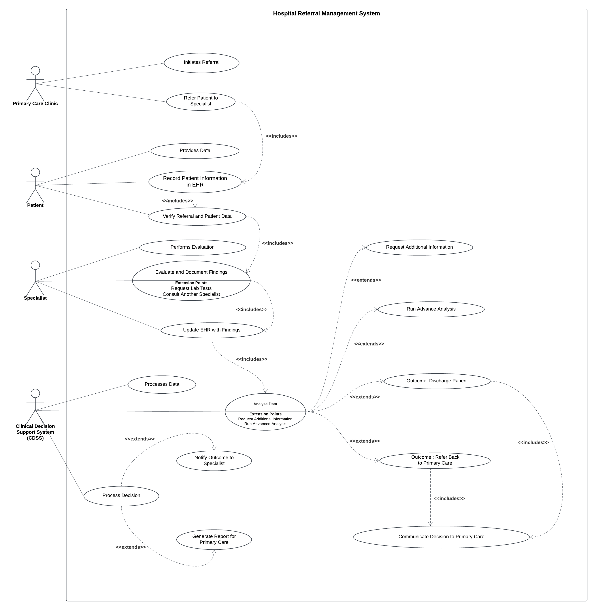

Below is the use case diagram illustrating the actors and use cases involved in this ETL project:
The Primary Care Clinic initiates the referral process by identifying the need for specialized care and referring the patient to a hospital or specialist. The Patient, as the central subject of care, provides medical history and other relevant data, which are recorded in the Electronic Health Record (EHR). The Specialist, with expertise in a specific field, evaluates the patient, performs necessary tests, and documents findings in the EHR. This process may include requesting additional lab tests or consulting other specialists to ensure comprehensive care.
The Clinical Decision Support System (CDSS) plays a critical role by analyzing the patient’s data stored in the EHR. It generates recommendations to assist the specialist in deciding the next steps, such as referring the patient back to primary care for follow-up treatment or discharging the patient if no further intervention is needed. Once a decision is made, the hospital communicates the outcome and any treatment details to the primary care clinic, ensuring smooth continuation of care. This approach improves the referral process, increasing efficiency and facilitating evidence-based decision-making.